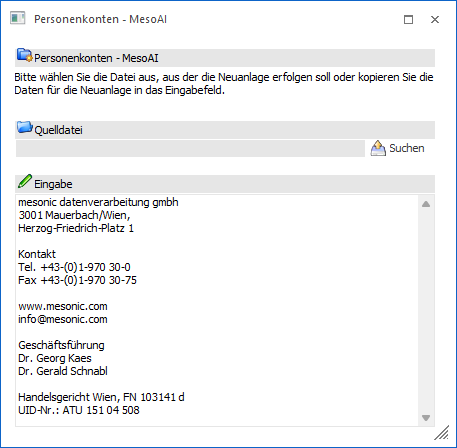
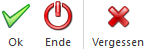

Dieses Fenster wird geöffnet, wenn entweder im Artikelstamm oder im Personenkontenstamm in der Formulaeansicht der Button MesoAI angewählt wird.
Hinweis
Damit diese Funktion verwendet werden kann, muss im WinLine START im Menüpunkt…
1 Parameter
1 Einstellungen
1 Register "MesoAI"
… ein Produktschlüssel für das gewünschte AI-Modell (aktuell ChatGPT 3.5) eingegeben werden.

Ø Eingabe
Wenn das Fenster geöffnet wird, dann wird in das Feld "Eingabe" ein eventuell vorhandener Text aus der Zwischenablage übernommen. Dieser Text kann jederzeit überschrieben werden - z.B. durch Kopieren eines anderen Textes aus der Zwischenablage.
Ø Suchen
Alternativ kann auch der Suchen-Button angeklickt werden, wodurch das Windows-Öffnen-Fenster aufgerufen wird. Hier kann nun ein Dokument ausgewählt werden, deren Inhalt in das Fenster übernommen werden soll. Folgende Dateitypen werden unterstützt:
ü pdf: durchsuchbar, bei nicht durchsuchbar wird OCR-Erkennung zugeführt und durchsuchbar gemacht
ü html, htm: Plaintext wird extrahiert
ü rtf: Plaintext wird extrahiert
ü txt, log, ini: Text wird übernommen
ü jpg, jpeg, gif, tif, tiff, bmp, png: werden OCR-Erkennung zugeführt
ü doc, docx, dot, dotx, odt, rtf: Plaintext wird über VBS über Word extrahiert (Word muss installiert sein)
ü xls, xlsx, xlsb, xltx, xlt, xls, ods, csv: Plaintext wird über VBS über Excel extrahiert (Excel muss installiert sein)
ü pptx, ppsx, potx, ppt, pps, pot, odp: Plaintext wird über VBS über PowerPoint extrahiert (PowerPoint muss installiert sein)
Wenn eine Datei ausgewählt und mit "Öffnen" bestätigt wurde, wird der Inhalt der Datei in Text umgewandelt und im Feld "Eingabe" angezeigt.
Ø Drag & Drop
Die dritte Variante ist, ein Dokument via Drag&Drop auf den oberen Bereich des Fensters (nicht auf das Feld Eingabe) zu ziehen - auch dann wird der Inhalt der Datei in Text umgewandelt und im Feld "Eingabe" angezeigt.
Danach kann der Text in im Feld "Eingabe" ggfs. noch geändert werden (wenn z.B. aus einer Grafik nicht alle Informationen übernommen wurden).
Buttons

Ø Ok
Durch Anwahl des Buttons "Ok" bzw. der Taste F5 wird die Anlage des Datensatzes durchgeführt, wobei hier die Felder gemäß der Vorlage befüllt werden.
Hinweis
Grundsätzlich sind in den Vorlagen die Felder gemäß der Bedeutung mit entsprechenden "Fragen" versehen. Sollte es aber Felder geben, wo ein spezieller Inhalt eingefügt werden soll, so kann in der Vorlage auch eine "Frage" hinterlegt werden - dazu gibt es in der Vorlagen-Anlage bei den Feldern eine Spalte "AI-Frage", wo die Frage hinterlegt werden kann.
Beispiel
Im Notizfeld könnte man beispielsweise den restlichen Text einer kopierten Adresse übernehmen, indem man die Frage "bitte den Text ohne Adresse zusammenfassen" angibt.
Ø Ende
Durch Anwahl des Buttons "Ende" bzw. ESC wird das Fenster geschlossen.
Ø Vergessen
Wird der Vergessen-Button bzw. die Taste F4 gedrückt, so wird das Fenster initialisiert (alle Eingaben geleert) und es kann ein neuer Text eingegeben/erfasst/übernommen werden.